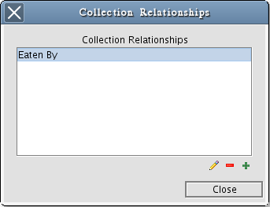
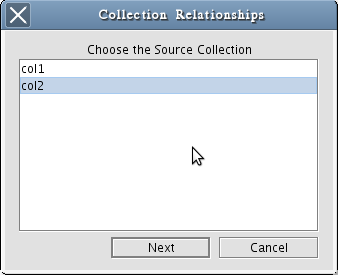
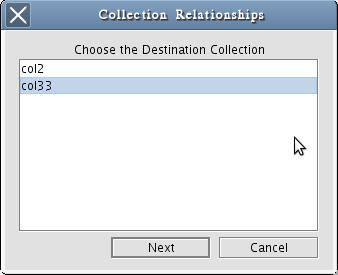
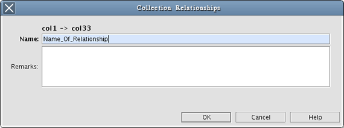
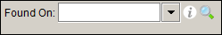
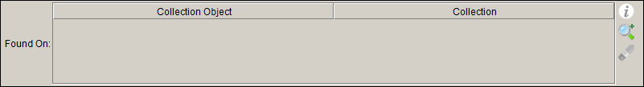
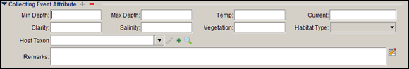

Configure Collection Relationships
Collection relationships in Specify allow specimens to be associated with either specimens in another collection or with a taxonomic name in another collection. Some examples of these types of relationships are tissue and voucher, plant and pollinator and host parasite, etc. Specify allows collection objects in two different collections to be related to one another for the purpose of documenting these types of relationships. The collections may be in different disciplines, but are required to use the same catalog number format.
Collection relationships require that one collection be the 'Source' and the other the 'Destination'. In a single relationship, a source may have many destinations, but a destination may only have one source. This is important to remember when choosing which collection will be the source and which will be the destination. For instance, if a bee polinates several flowers the bee collection would be the source and the flowers would be the destination.
Collection relationships can either associate two collection objects (cataloged specimens) or a collection object from a source collection with a taxonomic name in a destination collection. A relationship that associates two collection objects is called an Object Relationship and a relationship that associates a collection object with a taxonomic name is called a Host Taxon ID.
Two steps are required to create collection relationships:
- The relationship must be configured and named using the Collection Relationship tool in Specify
- Forms must be edited to include controls which allow the source collection object to be associated with the destination collection object or taxonomic name. Please contact Specify at specify@ku.edu to request forms that include either of these relationships.
The collection relationship tool is only available to users at the system administrator level.
Configure Collection Relationships
To open the collection relationship tool choose System > Configure Collection Relationships.

Existing Collection Relationships
If collection relationships exists within any of the collections in the institution the first window will display those existing relationships. Existing relationships can be edited or added using available buttons.
Select the  (Edit) button to edit a relationship.
(Edit) button to edit a relationship.
Select the  (Delete) button to delete a relationship.
(Delete) button to delete a relationship.
Note: Collection relationships with associated collection objects may not be deleted. To delete a collection relationship all collection object associations must first be removed.
Select the  (Add) button to create a collection relationship.
(Add) button to create a collection relationship.

Choose a Source Collection
- Choose a source collection from the list of collections in the current discipline and click the Next button. The collections available are limited to those that you have permission to access.
Note: If a collection relationship exists for the current collection the first dialog will list the collection relationships. Either choose a current collection relationship to edit or click the (Add) button to add a new collection relationship.

Choose a Destination Collection
- Choose a destination collection from the list of acceptable collections in Specify. Associations may not exist between collections with different catalog number formats. The collections available are limited to those that you have permission to access and use the same catalog number format as the source collection.

Name the Collection Relationship
- Name the Collection Relationship. The remarks field is available for describing the relationship, which can be valuable information for colleagues or future users.
Associating Collection Objects using a Collection Object Form
The default forms in Specify must be edited to include fields for creating relationships.
Two relationship fields are available to add to forms:
- Object Relationship
- Host Taxon ID
Object Relationship
An object relationship associates a collection object in a source collection with a collection object in a destination collection. The object relationship field is added to the collection object form.

One Source associated with One Destination
Click on the  (Search) button and type in a catalog number from the destination collection. Specify will search the destination collection and show results in the dialog. Choose the correct value from the list to complete the relationship.
(Search) button and type in a catalog number from the destination collection. Specify will search the destination collection and show results in the dialog. Choose the correct value from the list to complete the relationship.

One Source associated with Many Destinations
Click on the  (Search and Add) button and type in a catalog number from the destination collection. Specify will search the destination collection and show results in the dialog. Choose the correct value from the list to add the relationship to the list.
(Search and Add) button and type in a catalog number from the destination collection. Specify will search the destination collection and show results in the dialog. Choose the correct value from the list to add the relationship to the list.
Select the  (Remove) button to remove a relationship from the list.
(Remove) button to remove a relationship from the list.
Host Taxon ID
A host taxon id associates a collection object with a taxonomic name in a destination collection. It is not necessary for the destination collection to include cataloged specimens. The host taxon ID field is added to the collecting event attribute form.

Host Taxon ID Field on a Collecting Event Attribute Form
Select the (Edit) button to edit a relationship.
Select the (Add) button and type the first few letters of a taxonomic name. A drop-down list of taxonomic names from the destination collection will display to choose from.
Simply click on the (Search) button and type in all or part of a taxonomic name. Specify will search the destination collection and show results in the dialog. Choose the correct name from the list to create the relationship.